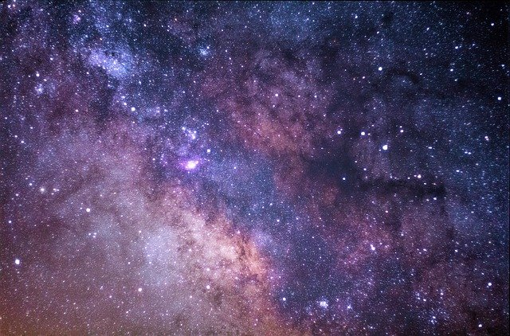

Obserwowanie gwiazd
Chociaż nie znam się na astronomii, uwielbiam patrzeć w nocne niebo. Napawam się jego bogactwem, miliardami świecących punkcików, które w danym momencie świecą tylko dla mnie. A Ty?
Wypatrywanie gwiezdnych konstelacji czy szukanie swoich własnych jest świetnym sposobem na spędzenie bezsennych nocy. Po co męczyć wzrok światłem ekranu telefonu albo przekręcać się bezcelowo z boku na bok? Podejdź do okna, oprzyj się o parapet, spójrz w niebo i pomyśl życzenie. Może dostrzeżesz UFO? Czasem, gdy zbliża się zaćmienie czy noc spadających gwiazd można nawet zarwać nockę. Dla takiego widoku warto.
Jeśli wciągniesz się w podziwianie gwiazd, poszukaj na Facebooku specjalnych wydarzeń związanych z oglądaniem nocnego nieba. Zajrzyj też koniecznie na stronę Centrum Nauki Kopernik, aby nie przegapić Nocy Spadających Gwiazd!
Możesz też skorzystać ze specjalnych aplikacji stworzonych do np. rozpoznawania gwiazd i gwiazdozbiorów! Zainstaluj ją na swój telefon - na Androidy przeznaczona jest aplikacja “Sky Map”, a na IOS “Night Sky”.
Jaką konstelację wypatrzysz jako pierwszą?
Centrum Nauki Kopernik
